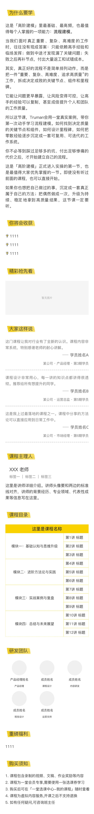
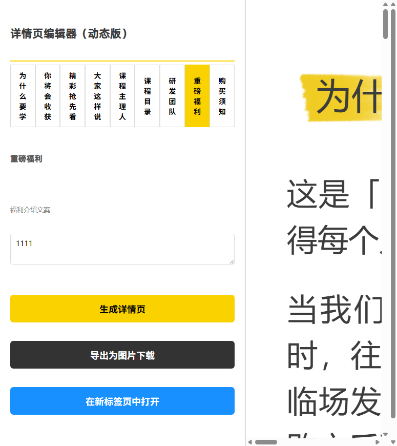
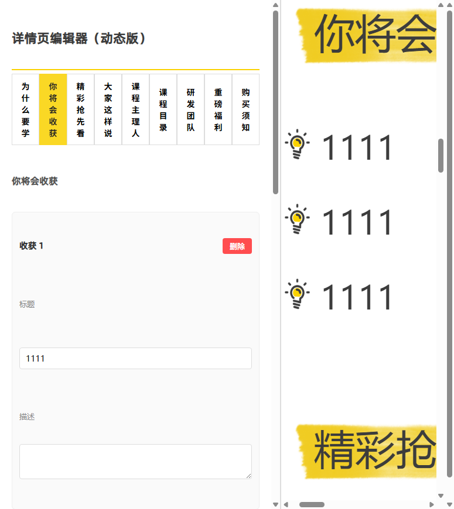
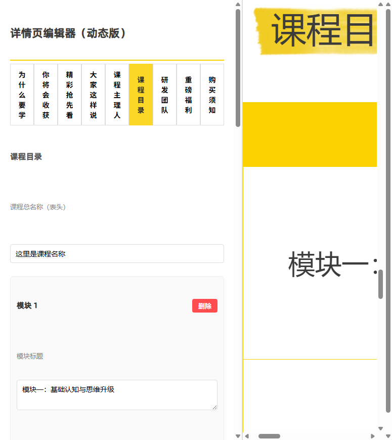

这份文档写给第一次接手的同事。不需要懂代码、不需要装软件，按顺序走一遍就能独立完成一张详情页；遇到排版小问题，最后有专门的处理办法。
课程上架的详情页，是把「为什么要学、学完能得到什么、讲什么、谁来讲、课程目录、团队、福利、购买须知」这些固定板块排成一张长图。以前是纯手工排版，一张要花大半天，而且每个字的位置、每块留白都得对着规则调。
这个工具把这套排版规则固化下来了：你只负责往表单里填文案和图片，版式由它自动排。填完点一下，右边立刻能看到成品长什么样；确认没问题，直接导出图片就能用，不需要再回设计软件改任何东西。
下面是它生成出来的成品效果（节选，可点开看大图）：

成品长图：标题高亮、模块分隔、讲师与目录排版都由规则自动完成
editor.html 也能打开，效果一样。素材没齐也可以先填文字，图片留空，最后统一补——但补图会让预览重新排一次，越晚补越容易漏。

界面全貌：左侧编辑区，右侧实时预览，底部三个操作按钮
整个界面就三块，弄懂这三块就够了：
| 位置 | 是什么 | 你要做什么 |
|---|---|---|
| 左侧顶部 | 九个竖排板块标签 | 点哪个，下面就显示哪个板块的填写框。当前板块会变成黄底。 |
| 左侧中间 | 当前板块的表单 | 按字段往里填文字、传图片。带「删除」的是可删条目，带「+ 添加」的是可加条目。 |
| 左侧底部 | 三个按钮 | 生成详情页（黄色）→ 导出为图片下载（黑色）→ 在新标签页中打开（蓝色）。 |
| 右侧整块 | 实时预览 | 不用管，它是结果。你改左边，它跟着变。 |
建议照下面这个顺序填，因为前面的板块决定后面的语气和结构。每个板块点左侧标签切换，填完再点下一块。
填这个课程的「钩子」：学员为什么现在必须学、不学会怎样。一段就够，不要写成分点大纲。这段文字在成品里会配一句高亮标题，所以第一句要能独立站住。

收获板块：每条一个「标题 + 描述」，默认三条，可增可删
填一段介绍文案，再用「选择图片（支持 jpg/png）」传一张能代表课程质感的图。传错了点「清空图片」重来。
这张图在成品里是视觉重心，尽量选清晰、有信息量的；纯装饰图会显得空。
学员评价，默认 3 条，每条三个字段：评价内容、署名、学分/职位。月底不够点「+ 添加评价」。
四个字段：讲师姓名、标签（多个标签用竖线 | 分隔）、详细介绍、讲师头像。

目录板块：先填表头总名称，再逐个模块填「模块标题 + 课程列表」
每个成员填 姓名（可用花名或岗位名）和 职位，默认 5 位，可增删。职位写职能，比如产品经理、课程设计、内容研发、视觉设计、运营支持。
一段福利介绍文案。说清楚给什么、值多少、怎么领，别写成促销口号。
逐条列购买规则，默认 5 条，可增删。每条只讲一件事：包含什么、怎么用券、在哪看课、能否退换、找谁咨询。
九个板块都填完，点黄色的「生成详情页」。右侧预览会按最新内容重排一遍。
两个按钮可以都用：先「新标签页」确认无误，再「导出下载」拿文件。
导出的图在发出去之前，按这张清单过一遍，能挡掉绝大多数返工：
| 检查项 | 合格标准 |
|---|---|
| 九个板块齐全 | 为什么要学 / 收获 / 抢先看 / 评价 / 主理人 / 目录 / 团队 / 福利 / 须知，一个不缺 |
| 课程名称一致 | 表头、正文、目录里出现的课程名完全一致，没有旧版残留 |
| 图片全部显示 | 没有空白框、没有裂图，头像未变形 |
| 目录一行一讲 | 每个讲次独立成行，模块标题带序号 |
| 无孤儿字 | 没有一行只剩一两个字（有就见第 7 节） |
| 信息不越界 | 无真实学员姓名、无内部人员信息、无未公开价格 |
| 尺寸正确 | 导出图为竖版长图，宽度与上架位要求一致 |
这是文字长度和版心宽度撞上了。两个办法：① 微调这段文案，删掉一两个字或补一句话，让它自然换行；② 需要精调字间距时，在浏览器里按 F12 打开开发者工具，选中那段文字，微调 letter-spacing 数值，看预览效果合适了再改回文案里。改完记得重点看这一段，别影响上下版块。
一致。导出就是把右侧预览整页渲染成图片，比例、字体、间距都是同一套规则。所以在预览里看到的问题，导出后一定存在，不要抱着「导出可能就好了」的心态。
浏览器的显示缩放会影响渲染清晰度。把页面缩放调到 100%（Ctrl + 0）再导出，效果最稳。如果只需要局部截图，用 Ctrl + Shift + S 调出截图工具选取区域即可。
不会。九个板块各自独立，改哪块只影响哪块。所以可以放心来回改，不必从头重填。
复制上一期的文案文档，先替换课程名、目录、主理人、须知的差异部分，其余沿用。打开工具后按九个板块顺序贴一遍，通常 10 分钟内能出图。
先确认格式是 jpg 或 png（webp、heic 不行）；再看文件是不是特别大，压到 1MB 以内再试；还不行就换 Chrome 重开页面。
填的时候对着这张表，就不容易漏字段。
| 板块 | 字段 | 要点 |
|---|---|---|
| 为什么要学 | 段落内容 | 一段钩子文案，首句要能独立站住 |
| 你将会收获 | 标题 / 描述 / 添加·删除 | 3 条起，标题平行、描述具体 |
| 精彩抢先看 | 介绍文案 / 选择图片 / 清空图片 | 图片是视觉重心，选清晰有信息量的 |
| 大家这样说 | 评价内容 / 署名 / 学分·职位 | 不写真实姓名，署名用角色化写法 |
| 课程主理人 | 讲师姓名 / 标签 / 详细介绍 / 选择头像 / 清除头像 | 标签 2–3 个、竖线分隔；头像正面方正 |
| 课程目录 | 课程总名称 / 模块标题 / 课程列表 / 添加模块 | 课程列表一行一讲，模块带序号 |
| 研发团队 | 姓名 / 职位 / 添加成员 | 职位写职能即可 |
| 重磅福利 | 福利介绍文案 | 说清给什么、值多少、怎么领 |
| 购买须知 | 内容 / 添加须知 | 一条只讲一件事，最后填避免矛盾 |